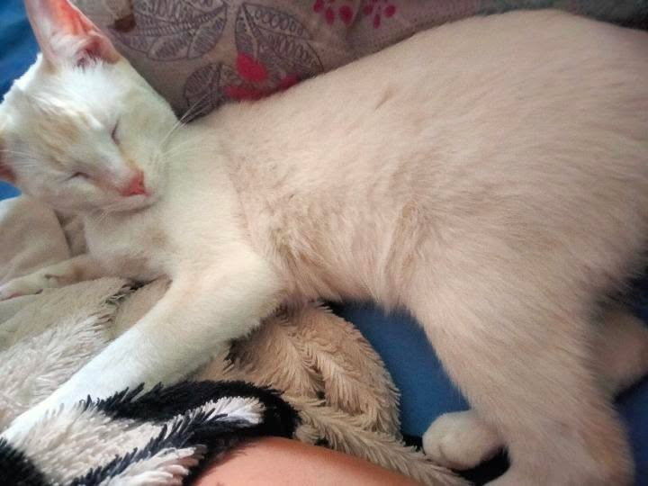

Frase de recuerdo...
Nuestras estrellas de luz (Presione una para ver el recuerdo)
Toca una pieza suelta y luego la casilla del tablero

Felices 12 meses🤎
Mi Bebeshitaaa Peshoshaaaa, Amor de Mi Vidaaa, dueña de mi vida, dueña de mis suspiros, de mis pensamientos, de mis deseos, de mi velitaaa hoy cumplimos 12 mesesotes, es increíble como a pasado el año tan rapidotee, apenas ayer llego cabezukaaa también y ya está super grande.
Shi llegó hasta aquí, quiero darle las gracias por recorrer este pequeño cielo, cada estrella, cada fotografía y cada detalle fueron puestos ahí con mucho cariño, porque cada uno representa un recuerdo, un momento o una razón por la que usted es tan especial para mí, por la que me enamoré de usted, se que no es mucho pero es con todo mi amor, no quele q le regale comidita hoy? JAJAJAJA, hoy tenemos q apagar un pastel de primer año.
Hoy se cumple un año desde que nuestras vidas comenzaron a compartir una historia, desde q papito Dios dejo q empezaramos a tener una historia super linditaaa. Un año que pasó muchísimo más rápido de lo que imaginaba, pero que dejó recuerdos que siempre voy a guardar con muchísimo cariño, que lindoteee es estar a su lado es único, cada hora parecen minutos, los minutos pasan lentos, poq en verdad disfruto mucho cada conversación entre nosotros, me encanta hablar con usted es lo más lindoteeee, verla mimir, verla roncar JAJAJAJA, fue lo más lindoteee que eh visto en vida, desde que la escuche me enamoré por completo, no hay un día q me siga enamorando de usted y aun estando lejitos usted tiene todo mi amorsoteee, mucho amor para darle🫦
Gracias por cada conversación, por cada risa, por cada desvelo, por cada llamada, por cada momento bonito y hasta por aquellos momentos difíciles que también nos enseñaron algo, aunq tuvimos malos momentos para mí pudimos superarlos se q algunos siguen afectando, pero ojala algún dia ya no sea asi y podamos ser mega happys, sería increíble poder estar toda una vida a su lado.
Quiero que nunca dude de lo especial que es para mi, lo importante y que es lo mejor que me a pasado en la vidaaa. Usted tiene una forma muy bonita de iluminar mi vida y de las personas que la rodean (de su casitaaa) usted es el amor de mi alma, de mi corazoncitooo, mi motivo de seguir vivo, poq yo naci únicamente para amarla🫦y espero que nunca deje de perseguir cada uno de sus sueños, poque yo siempre voy a estar a su lado ayudandola, apoyandola y motivandola a lograrlosh.
Tal vez este regalo no sea perfecto, pero cada línea de código, cada animación, cada fotografía y cada detalle fueron hechos pensando únicamente en usted. Lo hice con muchísimo cariño con mucho amorsoteee.
No sé qué nos esperé en el futuro, pero shii sé que siempre voy a agradecer a papito Dios haber coincidido con usted y q si mi futuro es q su lado me va encantar demasiado, muchísimo. Haber podido compartir todos estos recuerdos, espero seguir creando muchos más recuerdos a su lado y poder estar toda una vidotaa juntotessss.
Gracias por este primer año lleno de momentos inolvidables.
LA AMOOOOO MUCHÍSIMOOOOOO, DEMASIDOOOOO UN BUEN MI BEBESHITAAA PESHOSHAAAAA😭🤎
Felices 12 meses Mi Bebeshitaaa. 🤎
Espero que este sea el primer año de muchos más a su lado, y que podamos seguir creando recuerdos juntos pero pasandolos a su lado en personaaaaa, que deliciosssooo. Gracias por ser mi compañera, mi amiga, mi confidente, mi amor de mi vidotaaa, por ser todo para mi. Beshos en su colotaaa deliciosaaaa Bebecitaaaaaaaa🗣️ UAAAAA, BRRRR. JAJAJAJAJAAJJAAJ